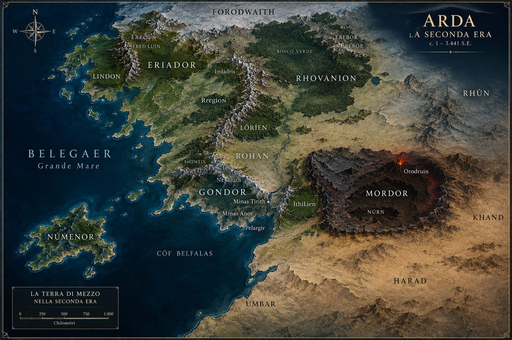

Lindon e i Porti Grigi
Lindon e i porti occidentali degli Elfi diventano il centro della presenza elfica nella Terra di Mezzo.

Lindon e i porti occidentali degli Elfi diventano il centro della presenza elfica nella Terra di Mezzo.

L'isola di Númenor diventa la grande patria degli Edain, al centro della storia della Seconda Era.

I Númenóreani iniziano a esplorare e frequentare le coste della Terra di Mezzo, ampliando la loro influenza.

Sauron torna nella Terra di Mezzo e comincia nuovamente a radunare potere e servitori.

Gli Elfi fondano Eregion presso le Montagne Nebbiose, trasformandola in un grande centro di arti e forgiatura.

Sauron, sotto le sembianze di Annatar, si presenta agli Elfi e conquista la fiducia di Celebrimbor.

Gli artigiani di Eregion forgiano gli Anelli del Potere sotto l'influenza degli insegnamenti di Annatar.

Celebrimbor e i fabbri elfici realizzano i Tre Anelli, destinati a preservare e proteggere ciò che è bello nella Terra di Mezzo.

I Tre Anelli vengono affidati ai grandi signori elfici e sottratti all'influenza diretta di Sauron.

Sauron forgia l'Unico Anello per dominare gli altri Anelli del Potere e i loro portatori.

Gli eserciti di Sauron invadono l'Eriador e avanzano contro i domini degli Elfi.

Eregion viene devastata e Celebrimbor viene ucciso; la regione perde per sempre il suo ruolo di grande centro elfico.

Sauron entra in possesso dei Nove Anelli destinati agli Uomini.

Dopo la guerra, Sauron concentra nuovamente il proprio potere nelle terre di Mordor.

I Nove Anelli vengono consegnati da Sauron a uomini potenti, che nel tempo diventeranno i Nazgûl.

La grande flotta di Númenor giunge nella Terra di Mezzo e costringe Sauron a ritirarsi.

I Númenóreani consolidano la loro presenza sulle coste della Terra di Mezzo e fondano nuovi insediamenti.

L'influenza di Sauron cresce nella Terra di Mezzo minacciando i domini númenóreani.

Umbar diventa una delle grandi fortezze e basi navali dei Númenóreani nella Terra di Mezzo.

Pelargir viene fondata come grande porto dei Númenóreani Fedeli sulle rive dell'Anduin.

Ar-Pharazôn sale al trono di Númenor e diventa il più potente dei re dell'isola.

Ar-Pharazôn apprende della crescente minaccia di Sauron e decide di affrontarlo

Il re di Númenor prepara una grande armata per sottomettere Sauron.

Ar-Pharazôn giunge nella Terra di Mezzo e Sauron comprende di non poterlo sconfiggere con la forza.

Sauron sceglie di arrendersi volontariamente e si lascia condurre prigioniero a Númenor.

Sauron viene condotto nell'isola come prigioniero, ma prepara rapidamente la propria vendetta.

Sauron conquista la fiducia di Ar-Pharazôn e inizia a corrompere la corte e la società di Númenor.

Sauron convince Ar-Pharazôn che la morte è un inganno e lo spinge contro Aman.

Nella società di Númenor cresce la frattura tra i Fedeli ai Valar e coloro che desiderano maggiore potere e dominio.

Amandil, padre di Elendil, decide di tentare una disperata navigazione verso Aman per chiedere aiuto ai Valar.

Elendil prepara le navi dei Fedeli per fuggire da Númenor prima della sua inevitabile rovina.

Amandil salpa verso occidente nel tentativo di raggiungere Aman e implorare la misericordia dei Valar.

Ar-Pharazôn salpa con la Grande Armata per Aman per ottenere l'immortalità.

La flotta di Ar-Pharazôn raggiunge le rive di Aman, oltrepassando il limite imposto.

Di fronte alla ribellione degli Uomini, Manwë invoca Eru Ilúvatar e affida a lui il destino di Arda.

Eru interviene nella storia di Arda e ne muta la struttura, separando Aman dal mondo.

Númenor viene sommersa e distrutta; Elendil e i Fedeli viaggiano verso la Terra di Mezzo.

La distruzione di Númenor annienta il corpo di Sauron, ma non il suo spirito: l’Unico Anello rimane con lui.

sauron torna a mordor in spirito e si riorganizza.

Sauron riesce nel tempo a ricostituire una forma fisica fittizia, non riavendo più il suo aspetto originario.

La spedizione dei Fedeli si divide: Elendil raggiunge il nord, mentre Isildur e Anárion navigano verso il sud e l'Anduin.

Gli Uomini delle Montagne riconoscono il potere di Sauron e gli prestano servizio.

Elendil fonda Arnor nel nord e stabilisce il regno dei Dúnedain settentrionali.

Isildur e Anárion fondano Gondor nel sud, dando vita al grande regno dei Dúnedain della Terra di Mezzo.

Il re degli Uomini delle Montagne giura fedeltà a Isildur presso la Pietra di Erech.

Alla fine dell'assedio, Gil-galad ed Elendil affrontano direttamente Sauron alle pendici di Orodruin.

Sauron attacca Gondor e conquista Minas Ithil, che diventa Minas Morgul molti anni dopo.

Gli Uomini delle Montagne infrangono il giuramento; non troveranno pace fino a giuramento onorato.

Elfi e Dúnedain si uniscono nella Last Alliance, mentre le forze alleate si concentrano a Imladris.

La Last Alliance affronta le forze di Sauron nella grande Battaglia di Dagorlad e ottiene la vittoria.

L'esercito della Last Alliance attraversa la Terra di Mezzo e marcia verso Mordor.

Dopo la vittoria a Dagorlad, le forze dell'Alleanza entrano in Mordor e assediano Barad-dûr per sette anni.

Nel confronto finale, Sauron affronta Gil-galad ed Elendil e uccide entrambi i Re.

Isildur recide il dito di Sauron con il frammento dell'elsa di Narsil e prende l'Unico.

Separato dall'Unico, Sauron perde il potere dell'Anello e il suo corpo viene distrutto.

Isildur rimane in possesso dell'Unico Anello, mentre la Seconda Era giunge al termine.